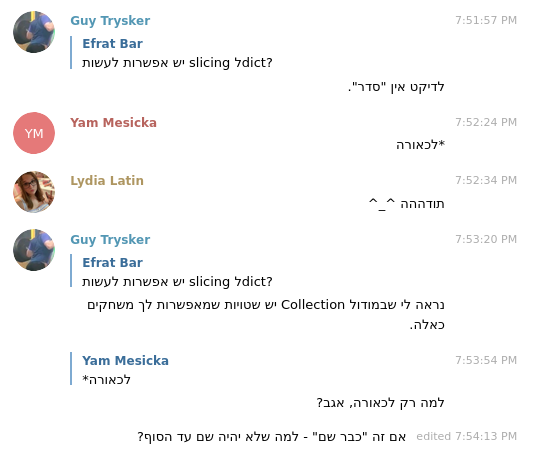

הכל התחיל ככה:

מה שסחף אותי לקצת סיפורי סבא. מוזמנים גם להינות. מעתיק את התשובה המלאה מהטלגרם:
זה סיפור ארוך, אנסה לעשות אותו קצר.
במהלך השנים נעשים שוב ושוב ניסיונות לייעל את איך שמבני הנתונים בפייתון מתוכנתים מאחורי הקלעים (מבחינת מהירות וחיסכון במקום). עושים את זה כי מבינים שכל מילישנייה שנחסכת תחסוך מילישנייה במאות מיליוני מקומות שמריצים פייתון, ובמצטבר חסכון של מילישנייה על פני כ"כ הרבה מקומות זה המון זמן. אותו רעיון גם עבור אחסון.
מהסיבה הזו, במהלך השנים בכל גרסאות פייתון, איך שמילון עובד באמת, מאחורי הקלעים בפייתון, היה קצת אחר. יש על זה הרצאה של בחור בשם Raymond Hettinger, אחד ממפתחי הליבה של פייתון למי שרוצה
למעשה, מילון הוא לא באמת המצאה של פייתון. הרעיון הכללי נקרא Hashmap – מעין מבנה שיודע להחזיק key ו־value, כאשר ה־key מצביע ל־value והפעולה של אחזור ערך לפי מפתח מסוים היא מאוד מהירה. המבנה הזה הוא רעיון, ומימוש שלו קיים כמעט בכל שפת תכנות מודרנית שתתקלו בה. אחד היתרונות המשמעותיים של hashmap הוא זמן הריצה המהיר ועלות זיכרון יחסית נמוכה, ואחד החסרונות הוא שאין סדר למפתחות. בפייתון המימוש לרעיון נקרא dictionary.
בפייתון 3.6 עשו שינוי מסוים (בפעם המאה) למימוש של מילונים, והצליחו לייעל אותם טיפה. אחד מ"תופעות הלוואי" של השינוי הזה, מעבר לכך שהמילון בגרסתו המיועלת תופס פחות מקום בזיכרון, הייתה שסדר הערכים במילון פתאום הפך להיות מסודר – לפי סדר ההכנסה של הערכים במילון. החבר’ה בפייתון ראו כי טוב, ובאמת החליטו שזה מגניב. אנחנו מדברים על שינוי יחסית חדש, ממש מלפני 3 שנים or so.
גוידו ואן רוסום, ה"בעלים" של פייתון באותה תקופה, אמר שזה מגניב, אבל סירב להכניס את זה כחלק מהתקן. בתקן עצמו (בתיעוד של פייתון) בגרסה 3.6 נשאר המשפט שאומר: “אסור לכם להניח שיש סדר כלשהו למילונים”, למרות שפרקטית – כבר היה סדר למילונים.
יש להחלטה של לא להכניס את הסדר למילונים לתקן 3 סיבות:
- הכנסה של דבר כזה לתקן היא נקודת אל־חזור. אם ירצו לייעל מילונים עוד בעתיד, הם יהיו עדיין חייבים לשמור על הסדר, כי אחרת זו שבירת תאימות לאחור – וחוסר יציבות זה משהו שאי אפשר לעשות בשפה שכ"כ הרבה אנשים משתמשים בה. זה מגביל במובן מסוים את היכולת לייעל מילונים.
- פייתון היא תקן. אנחנו משתמשים במימוש מסוים לתקן שנקרא CPython שבו רוב העולם משתמש, אבל יש מימושים נוספים לפייתון שמנסים, נניח, להמהיר את השפה. הכנסת אמירה כזו לתקן מחייבת אותם להתיישר עם מימוש שבו ל־dictionary יש סדר מסוים, וזו מכה קשה שעלולה לפגוע ביעילות שלהם.
- יש כבר במודול
collectionsמבנה שנקראOrderedDict. מי שמעוניין יכול להשתמש בו.
עכשיו, אחרי שיש לכם את כל הידע שנוגע למילונים ולהיסטוריה שלהם, אני יכול לספר לכם שאחרי לחץ מהקהילה החליטו בפייתון 3.7 כן להכניס את הסדר של המילונים לתקן (למרות שב־3.6 הם כבר היו מסודרים, דה־פקטו). לשמחתכם אתם עוברים בפייתון 3.7 ואתם יכולים להשתמש בזה. מבחינה פדגוגית, אני חושב שנכון יותר ללמד מילונים כ־hashmap – מבנה בלי סדר. גם כדי להעביר טוב יותר את המהות של מבנה הנתונים הזה, וגם כדי שיהיה לכם קל יותר לעבור לשפות אחרות אם תרצו.